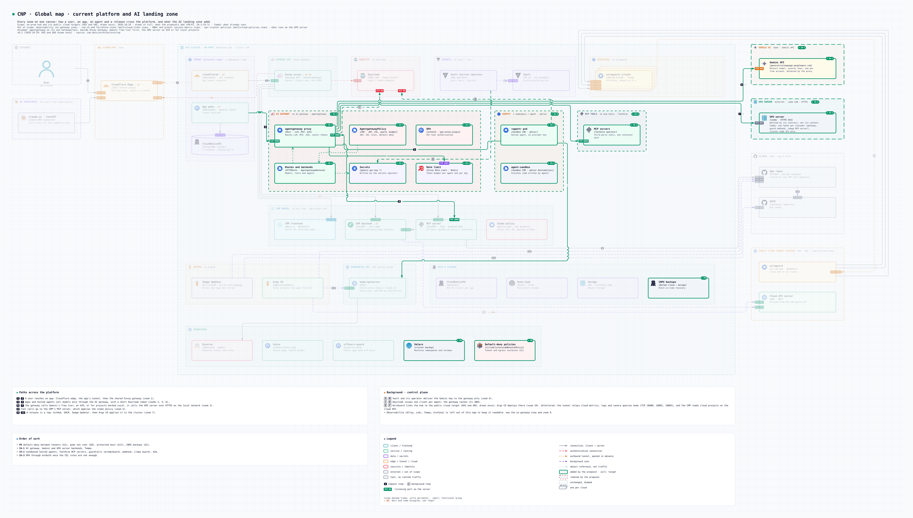

Landing zone IA¶
Statut : spec validée le 2026-10-25, rien n'est encore déployé. Tous les éléments ajoutés au modèle Noodle portent
status: plannedet une cible :P0–P2pour les écarts de la landing zone actuelle,IA-1–IA-3pour la landing zone IA.La spec de référence est validée (v1.0, 2026-10-25). Les décisions D1 à D37 sont dans 02-spec.md (§3 et §9), les phases et vérifications dans 03-phases.md, la partie CMP dans 04-cmp-agents.md, le plan d'implémentation dans 05-plan-implementation.md, le FinOps de l'IA dans 06-finops-ia.md et les flux pas à pas dans 07-flux.md.
La landing zone IA se greffe sur la plateforme existante. Les appels des agents vers un modèle ou un outil passent par une AI gateway (agentgateway) posée à côté de l'Envoy Gateway déjà en place, avec sa propre GatewayClass. La gateway porte l'authentification Keycloak, l'autorisation par claims, le budget en tokens par agent et par jour, le choix du modèle et les traces.
Décisions¶
Voir le registre des décisions de la spec : D1 à D7 y gardent leur numéro.
Prérequis issus de la landing zone actuelle (P0) : isolation inter-tenant (G1), contexte de sécurité des pods (G8), branches GitOps protégées (G17), sauvegarde des bases CloudNativePG.
Schémas¶
La plateforme et sa landing zone IA en un coup d'œil¶
Toute la plateforme actuelle, estompée (entrée, CMP et GitOps, apps des tenants, données, GitHub, EKS et GKE, services transverses), et la landing zone IA en clair. Vingt et un flux : le parcours d'une requête, la mise en place, et les flux d'aujourd'hui.


La landing zone IA en un coup d'œil¶
Une boîte par brique, quinze flux : le parcours d'une requête (numéros) et la mise en place (lettres). En clair ce que la landing zone IA ajoute, estompé ce qui tourne déjà.


La plateforme déployée et sa landing zone IA¶
Ce qui tourne aujourd'hui, estompé, et toute la landing zone IA en clair, dans sa version retenue (option B : agentgateway et kagent). Chaque boîte dit ce que fait l'outil ; les zones sont les frontières d'isolation (namespace, niveau de runtime, réseau). Les numéros suivent une requête d'utilisateur vers un agent, qui appelle un modèle, un outil et un autre agent en A2A ; les lettres montrent ce qui est mis en place avant. Seuls les deux flux refusés par conception sont en rouge.


Vue d'ensemble détaillée : tous les zooms sur une seule carte¶
Le hub on-prem tel qu'il tourne aujourd'hui (estompé) et toute la landing zone IA (en clair), au niveau de détail des zooms : politiques et CRDs d'agentgateway, contrôleur, proxy, clients Keycloak, pipeline Alloy. Les trois niveaux d'isolation du sandbox sont trois nœuds distincts côte à côte (gVisor, Kata, runc standard) : la plateforme peut en proposer un, deux ou les trois, selon que l'agent exécute du code ou non. EKS et GKE restent résumés à leur API server. Grande image : l'ouvrir dans draw.io (platform-detailed.*.drawio) pour zoomer.

Carte globale : plateforme actuelle et landing zone IA¶
Toute la plateforme sur une seule toile : le hub on-prem, la landing zone IA proposée, GitHub, les modèles et les clusters EKS et GKE. Les numéros suivent un utilisateur, une app, un agent et une release ; les lettres, les tâches de fond.

AI gateway : vue détaillée¶
L'AI gateway agentgateway ouverte : GatewayClass, Gateway et HTTPRoute, AgentgatewayBackend (LLM, MCP, A2A), AgentgatewayPolicy, contrôleur et proxy, avec le chemin d'une requête en 14 étapes dans l'ordre des politiques de la doc.


Agent sandbox : vue détaillée¶
Comment un agent obtient un bac à sable isolé pour exécuter le code qu'il écrit : CRDs agent-sandbox, contrôleurs, garde-fous, et la chaîne kubelet, containerd, runsc jusqu'au noyau gVisor.


Variante Kata Containers (une micro-VM et un noyau par sandbox) :


Niveau standard (agents sans exécution de code, runc) :


Outils MCP : vue détaillée¶
Comment un appel d'outil va de l'agent au serveur d'outils : le proxy MCP d'agentgateway (route et AgentgatewayBackend mcp, politique d'accès par outil), ToolHive pour les serveurs tiers, le serveur MCP du CMP et sa politique de stake.


Identité des agents : vue détaillée¶
Un client Keycloak par agent, client_credentials quand l'agent agit seul, token exchange quand il agit pour un utilisateur, ce que contient le jeton, et l'audience cmp-mcp avec la client scope cmp-tools pour les outils de la CMP.


Modèles : vue détaillée¶
Gemini en premier (plusieurs clés, quota gratuit par projet Google), repli sur le serveur GPU, un élément externe défini par son contrat et joint en HTTPS sur le réseau local, et la route réservée aux projets Local.


Observabilité GenAI : vue détaillée¶
De l'appel d'un agent à une trace et des compteurs de tokens par projet : les sources, le pipeline Alloy, Tempo, VictoriaMetrics et Grafana.


Tech stack : actuel et ajouts¶


AI gateway¶


Un appel de modèle¶


Sources : architecture/cnp/views/platform-ai-full.yaml, platform-ai-simple.yaml, platform-ai-stack.yaml, platform-detailed.yaml, platform-global.yaml, ai-gateway-internals.yaml, agent-sandbox-internals.yaml, agent-sandbox-kata.yaml, agent-sandbox-runc.yaml, mcp-tools-internals.yaml, agent-identity-internals.yaml, models-internals.yaml, genai-observability-internals.yaml, ai-landing-zone.yaml, ai-gateway.yaml et
ai-gateway-call.yaml, construites avec ./architecture/build-diagrams.sh.